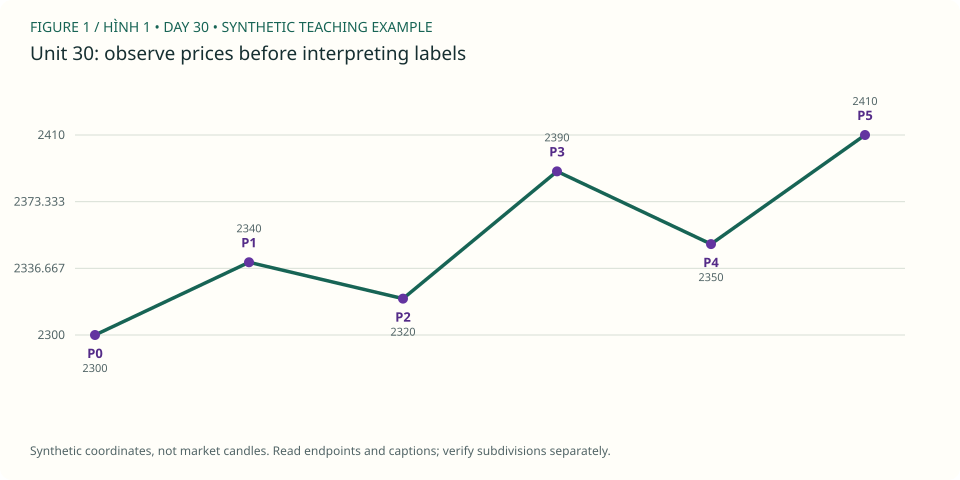

PDF CURRICULUM · UNIT 30 / 30
Bài thi và kế hoạch tiếp tục / Independent capstone
tự hoàn thành phân tích có thể bị bác bỏ, không cần một “đáp án sóng duy nhất”.
1. Học và ví dụ theo unit / Study
- Đọc lại: PDF 105 và các trang gắn với lỗi còn mắc.
- Mục tiêu: tự hoàn thành phân tích có thể bị bác bỏ, không cần một “đáp án sóng duy nhất”.
- Nguyên lý: evidence hierarchy; alternatives; uncertainty; risk discipline; continuous review.
- Ví dụ mới: một đoạn XAUUSD chưa dùng trong bài trước, cutoff được chọn trước khi xem phần tương lai.
- Bài tập: 20 câu lý thuyết/tính toán +1 Daily/H4/H1 study +1 kế hoạch giả định hoặc no-trade có lý do.
- XAUUSD: nộp trước/sau reveal, original/corrected count, bảng endpoints, invalidation và rule audit.
- Nộp/đạt: ≥80/100 và không có critical error; chưa đạt thì học lại nhóm yếu, không chuyển sang tiền thật vì hết30 ngày.
Đọc hình gốc & trả lời trên chart / Source-chart lesson
USD/CHF: ví dụ kế hoạch wave C trong sách · Steve Sinclair, Elliott Waves Made Simple, Image 64, PDF p.91. Mở trang gốc / Original page
- Quan sát / Observe: Dùng case sách để ôn audit; bài thi chính là chart MT5 chưa được gắn nhãn phía dưới. / Use the source case for review, then count the independent MT5 chart.
- Suy luận / Reason: Nộp endpoint table, primary/alternate, invalidation, evidence thiếu và bản trước reveal. / Preserve the original hypothesis and its evidence.
- Giới hạn / Limit: Hai câu đọc hình không thay thế capstone hay xác nhận trình độ chuyên nghiệp. / These recognition tasks do not certify professional competence.
Ảnh trích từ PDF bạn cung cấp, giữ nhãn gốc để học cách đọc; không phải dữ liệu MT5 của lab. Bấm vào điểm giá/đỉnh/đáy được hỏi (không bấm chữ nhãn), rồi “Kiểm tra”. Mỗi câu có hình riêng để lưu hai điểm độc lập. / Click the requested endpoint, not the label text; each question has its own saved point.
Câu hình 1 / Image question 1
Bấm low gốc A tại mức Fib 1 bên trái. / Locate A's origin low at Fibonacci 1.
Chưa chọn điểm / No point selected.
Câu hình 2 / Image question 2
Bấm đỉnh A/(v), endpoint cha dùng đo mức hồi. / Locate the parent A/(v) high.
Chưa chọn điểm / No point selected.
Chấm tọa độ trong vùng dung sai quanh endpoint được hỏi, không tự xác nhận cấu trúc Elliott hay hiệu quả giao dịch. Dùng trường X/Y nếu không thao tác chuột; gốc tọa độ ở góc trên trái. Lưu trả lời hoặc export để giữ điểm, lời giải và nguồn hình.
Sơ đồ giả định bổ sung / Additional synthetic sketch

Sơ đồ giá giả định: đọc cùng ví dụ của bài. P là điểm quan sát, không là số sóng Elliott. Không mô tả RSI, contract size hoặc kết quả giao dịch từ đường giá này.
Quy tắc, guideline và lưu ý nguồn · Cách làm và rubric bài vẽ
2. Trắc nghiệm / Multiple-choice practice
6 câu chọn đáp án, có giải thích sau khi chấm; 4 nhiệm vụ tự luận/vẽ bên dưới. Đây là luyện tập offline, không phải bài thi chống xem đáp án.
Checkpoint này dùng để ôn trước capstone; không thay thế bộ 20 câu và hồ sơ đa khung được yêu cầu trong roadmap. Bài thi độc lập cần được giao/chấm riêng, không lấy điểm 6 câu này làm chứng nhận hoàn tất khóa học.
Chưa chấm / Not graded.
3. Bài vẽ của unit 30 / Draw here
Nhiệm vụ: nộp trước/sau reveal, original/corrected count, bảng endpoints, invalidation và rule audit.
Giải thích cần nộp: 20 câu lý thuyết/tính toán +1 Daily/H4/H1 study +1 kế hoạch giả định hoặc no-trade có lý do.
Starter window: XAUUSDm Daily, 2024-06-02 00:00:00 → 2024-08-28 00:00:00. Ban đầu 48/76 nến. Cửa sổ có thể không chứa pattern yêu cầu; ghi no-count và dùng lịch sử rộng hơn, không ép nhãn để đạt quota.
data/Mt5Data/XAUUSDm_Daily_202101030000_202609250000.csv · server-time offset unknown · không resample. Từng unit có nguồn/window identity riêng.
Chọn wick bắt đầu (low cho nhịp tăng, high cho giảm), rồi bấm lần lượt trên chart hoặc chọn nến và “Thêm điểm”. Tắt tự chuyển nhãn khi vẽ W–X–Y, nhiều degree hoặc swing riêng. Giá neo đúng wick thật, không kéo đến giá tùy ý.
Giới hạn: diagonal, complex/running/expanding triangle và policy giao dịch cần nhận xét thủ công; dùng swings thay vì ép chúng qua checker impulse. Mode triangle chỉ kiểm tra nhãn/thứ tự và các chân quan sát, không chứng nhận hình học, biến thể hay internals. Chưa biết executable bid/ask, timezone offset hoặc broker specs. OHLC không chứng minh fill hay lợi nhuận.
Daily / H4 / H1 cùng mốc quan sát
Đo các điểm đã chọn / Measure anchors
2 điểm: retracement; 3 điểm: projection; 6 điểm: độ dài 1/3/5. Không dùng kết quả đo để cứu count sai.
Gửi JSON và SVG vào chat để được nhận xét. Không tự upload. JSON gồm đúng nến đang thấy, endpoints, journal và câu trả lời; giữ bản gốc trước khi sửa.
OHLC và các nhãn đã vẽ
| Timestamp | Open | High | Low | Close | Labels |
|---|
Ví dụ pivot quan sát — không phải đáp án bài vẽ
Các P-pivot và candidate bên dưới được chọn hậu nghiệm trong 48 nến đầu, không chứng nhận đúng pattern của unit này. Giữ đóng cho đến khi bạn tự vẽ.
4. Tự luận, nộp bài và sửa / Written review
Tiêu chí tự đối chiếu — làm trước khi mở
chấm bằng chất lượng reasoning và kiểm soát thông tin; count đi sai hướng vẫn có thể được điểm quy trình.
Đối chiếu đúng source, wick và cutoff; kiểm tra hard rules; alternatives/internals có thể cần người đọc chart. Không chấm bài vẽ bằng điểm trắc nghiệm hoặc hướng giá sau đó.
Đạt bài: ≥80/100 và không có critical error; chưa đạt thì học lại nhóm yếu, không chuyển sang tiền thật vì hết30 ngày.. Trắc nghiệm ≥5/6 chỉ là checkpoint; 4 bài tự luận/vẽ cần đánh giá theo rubric (≥16/20, không lỗi nghiêm trọng), không tự chứng nhận hoàn thành.
Workbook mới tách biệt khóa cũ. Lưu câu trả lời trước khi rời bài; lỗi lưu sẽ hiện rõ, hãy export nếu browser không lưu được.